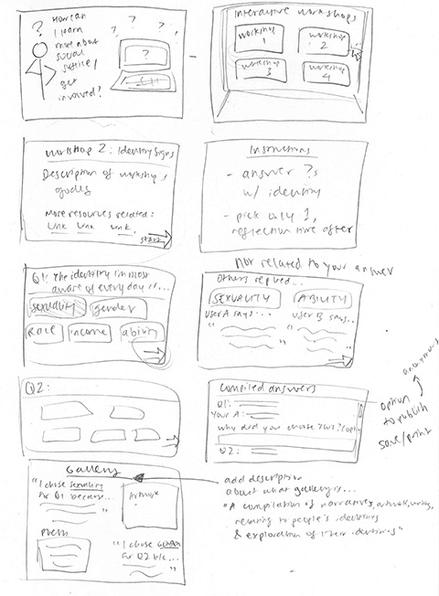

My storyboard outlines the process of how my translation of common introductory social justice workshops is visualized in an interactive digital format. My first rendition shows the user, who is someone interested in learning more about social justice and how they can get involved, interacting with the workshop I will fully flesh out: the Identity Signs Walk. The user first starts the workshop, and is given instructions for how to engage with the activity. They answer a series of questions by clicking on the identity that is most relevant to them, and after answering all the questions, is brought to a page that compiles their answers and asks them to reflect on why they chose those answers. Finally, they are brought to a page that shows other people's answers and related media.
After speaking with my peers, I addressed a couple of issues to my storyboard. The first was that it was unclear how reflecting on one's personal identity was related to issues of social justice. To resolve this, I added an information screen that discusses the relevance of the workshop before the user begins the activity. The other issue was that the overall format of my website was unclear in its purpose. I added a page that shows the range of different workshops that ideally I would create in the future. Finally, the gallery of other answers and related media was confusing, so I combined the two and added a description to the gallery about what its purpose is.